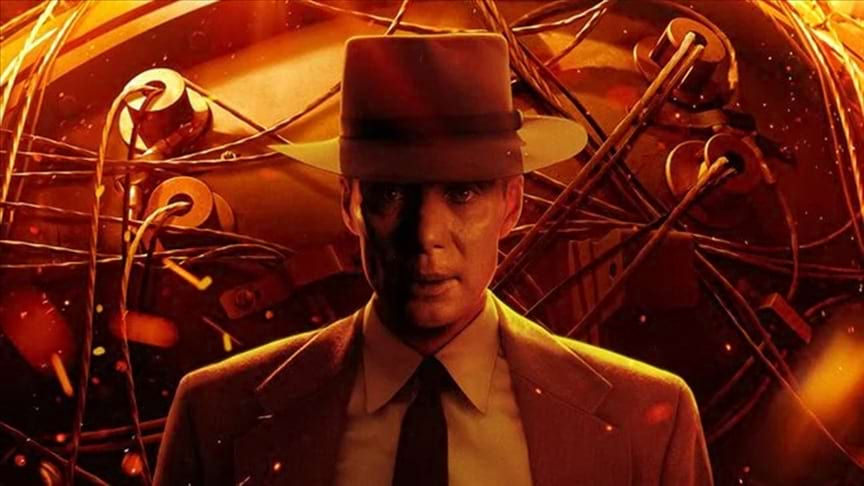
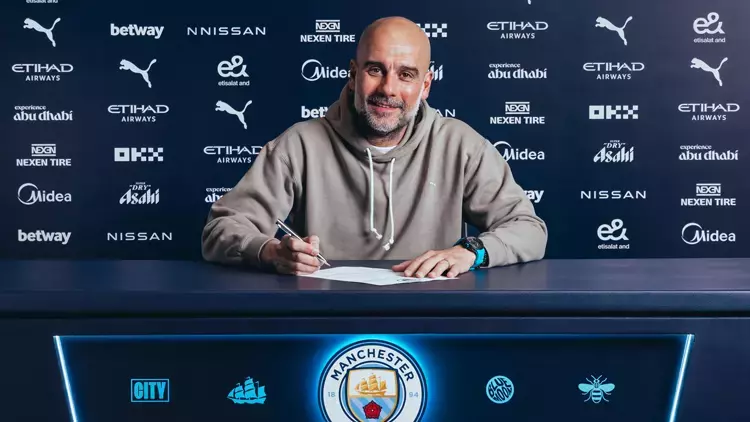

Oppenheimer nihayet Japonya'da vizyona giriyor
Christopher Nolan'ın eleştirmenlerce beğenilen filmi Oppenheimer,
Temmuz ayında gerçekleşen ilk global gösteriminin ardından, 2024
yılında Japonya'da sinemalarda gösterime girecek. Kesin çıkış tarihi
henüz açıklanmasa da yerel dağıtıcı Bitters End, yaptığı açıklamada
bu kararın “filmin konusu etrafındaki hassasiyetleri ele almak için
yapılan aylarca süren dikkatli diyalogların” ardından alındığını
belirtti. Bu gecikme, Japonya'nın filmde tasvir edilen olaylarla,
özellikle 1945'teki Hiroşima ve Nagazaki'ye yapılan atom bombası
saldırılarıyla olan tarihi bağını yansıtıyor.
Devamını oku

"Belki de dört mağlubiyetten dolayı oldu." - Guardiola sözleşmesini
uzattı
Manchester City teknik direktörü Pep Guardiola, teknik direktörlük
kariyerinde ilk kez dört maç üst üste kaybettikten sonra kulüpten
ayrılamayacağını söyledi. Guardiola, City ile olan sözleşmesini 2027
yılına kadar uzatarak iki yıllık yeni bir anlaşmaya imza attı.
Devamını oku
Bitcoin, ABD seçimlerinin ardından devam eden yükselişle 100.000
dolara daha da yaklaşıyor.
NEW YORK (AP) — Bitcoin, 99.000 dolar seviyesini ilk kez aşarak yeni
bir rekor kırdı ve dikkat çekici yükselişini sürdürdü. Bu kilometre
taşı, son iki haftada %40'tan fazla değer kazanan kripto para birimi
için önemli bir anı işaret ediyor ve dijital varlıkların öngörülemez
ve hızlı yükselişlerini bir kez daha ortaya koyuyor. Şimdi, Bitcoin
100.000 dolar sınırına ulaşmaya çok yakın.
Devamını oku